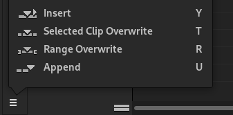
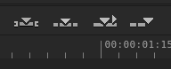

Adding clips to Sequence
Drag and Drop
Performing a Drag and Drop Edit
-
Start dragging by pressing and holding Left Mouse on:
- A Media Item in the Media Panel.
- The Monitor area when a Source Clip is displayed.
- A Range Log Item row in the Range Log panel.
- A clip icon appears under the cursor when the drag starts.
-
Drag the clip into the Timeline. A
positioning indicator appears on the target track:
- A red line with a small downward-pointing triangle indicates that an overwrite will be performed on the blank area starting at the indicated position.
- A yellow line with a small left-pointing triangle indicates that an insert will be performed between two clips or after a clip.
- A red box around a clip indicates that a clip replace will be performed on that clip. This indicator appears when the cursor is positioned near the center of the clip.
-
Release Left Mouse to perform the indicated edit.
- For Media Item and Monitor drags, the range of media added is the current Clip Range, if one has been set. See the Monitor chapter.
- For Range Log Item drags, the range of media added is the range defined by the Range Log Item.
Configuring Drag and Drop
- Select Edit > Preferences from the application menu.
-
In the Editing panel, select an option from the
Drag-and-Drop Action drop-down menu:
- Always Overwrite Blanks — On all tracks, dragging onto an empty area performs an overwrite, while dragging onto an existing clip performs an insert.
- Overwrite Blanks on Non-V1 Tracks — On Track V1, dragging always performs an insert. On other tracks, dragging onto an empty area performs an overwrite, while dragging onto an existing clip performs an insert.
- Always Insert — Dragging always performs an insert on all tracks.
- Clip replace always takes precedence when the drop position is near the center of an existing clip.
3-point Edits
3-point editing allows you to specify an edit with source range and a target position or range using three points in time.
In Flowblade, the source is the video or audio clip currently displayed in the Source Clip Monitor. The target is the current Sequence on the Timeline.
Performing 3-point Edits
-
Set the source range. See the Monitor chapter for
information on setting Mark In and
Mark Out.
- If both Mark In and Mark Out are defined, the source range is the part of the clip between those marks, including the frame at Mark In.
- If neither Mark In nor Mark Out is defined, the source range is the full range of the source media.
- If only Mark In is defined, the source range starts at the Mark In frame and continues to the end of the source media.
- If only Mark Out is defined, the source range starts at the beginning of the source media and ends at the Mark Out frame.
-
Flowblade provides four types of 3-point edits:
- Insert — Inserts the source range on the first active track at the nearest cut to the Playhead.
- Selected Clip Overwrite — Overwrites one or more selected clips on the Timeline with the source range.
- Range Overwrite — Overwrites the range between Mark In and Mark Out on the first active track with the source range.
- Append — Inserts the source range on the first active track after the last clip.
-
3-point edits can be performed from three locations:
- The Tool Dock menu, (see below left) .
- The Middlebar buttons, (see below right) .
- The Edit > Add from Monitor submenu.


- Select the desired 3-point edit from one of these locations to perform the edit.